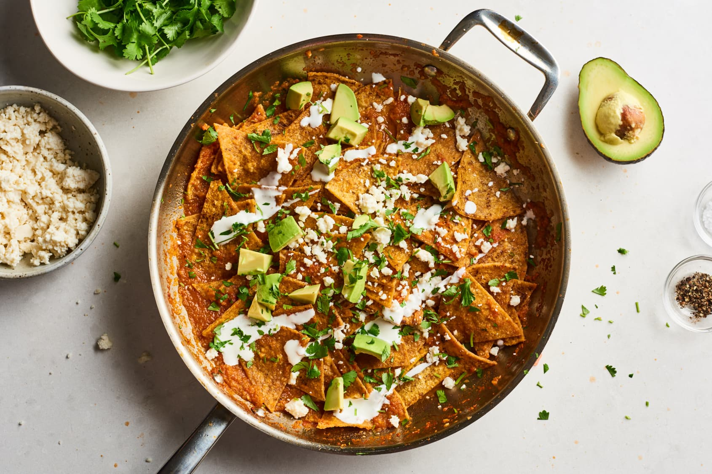
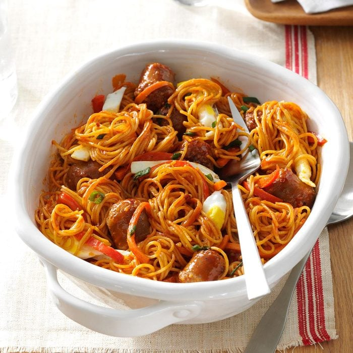
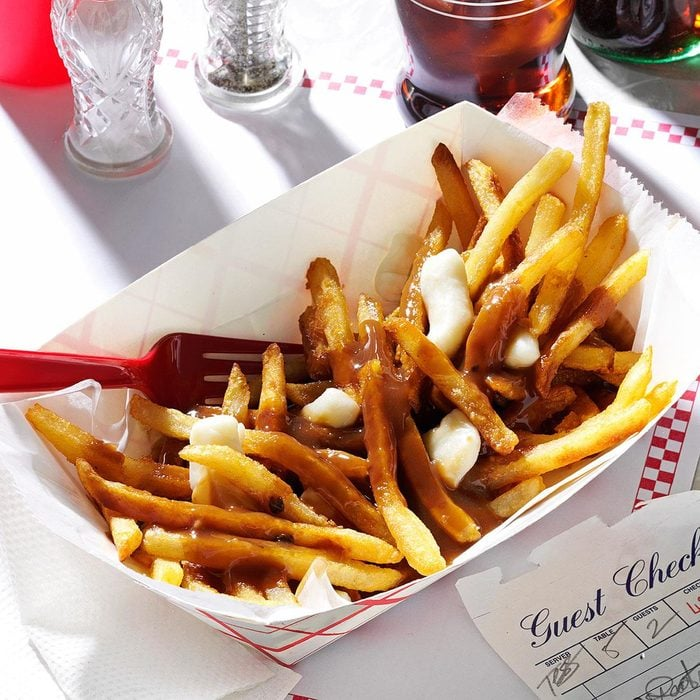
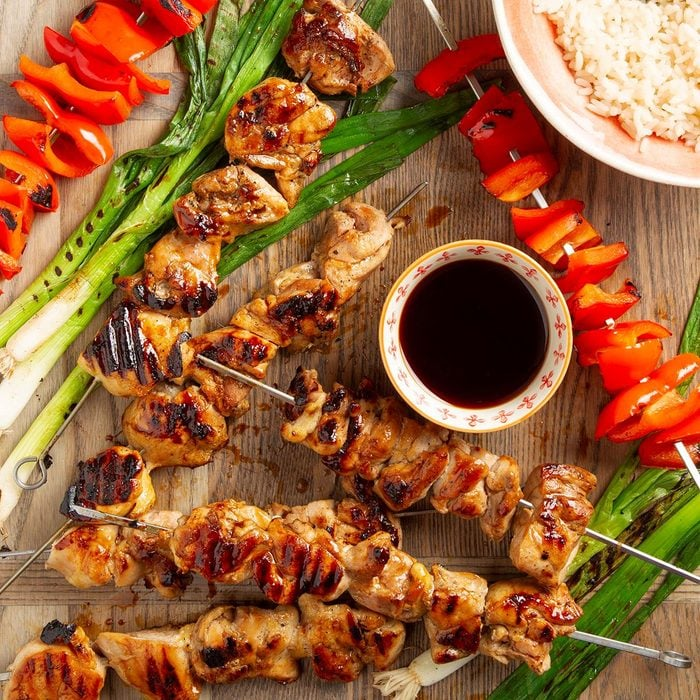

Trending Recipes
Chilaquiles

Ingredients:
FOR THE CHIPS: 1/4 cup vegetable oil, for frying 12 corn tortillas, cut into 8 wedges each Salt
FOR SALSA ROJA: 4 Roma tomatoes or 2 large tomatoes (about 1 1/2 pounds), chopped 1/2 large yellow onion, chopped 1 medium jalapeño, sliced (remove the seeds for a less spicy dish) 2 cloves garlic 1 1/4 cups low-sodium chicken or vegetable broth, divided 2 teaspoons vegetable oil Kosher salt
FOR SERVING: Avocado or guacamole Crema Queso fresco Fried eggs
INSTRUCTIONS:
Fry the tortillas. Heat 1/4 cup oil in a large skillet over medium-high heat until shimmering. Add about a quarter of the tortilla wedges and cook, flipping once, until lightly brown and crisp.
Drain the tortilla chips. Drain the freshly fried tortilla chips on a paper towel-lined baking sheet. Sprinkle lightly with salt. Repeat this process until all tortillas are fried, adding more oil if needed.
Make the salsa roja. Place the tomatoes, onion, jalapeño, and garlic in a blender or food processor fitted with the blade attachment. Pour in 1 cup of the broth. Blend until smooth.
Cook the salsa. Heat 2 teaspoons oil in a large skillet over medium-high heat until shimmering. Add the salsa and cook, stirring occasionally, until slightly thickened, 5 to 10 minutes (the consistency of the salsa will vary depending on the size and juiciness of the tomatoes). Add additional broth to thin out the salsa, if needed. Taste and season with salt as needed.
Coat the chips with the salsa. Add the tortilla chips and stir carefully to coat the chips. Cook until the tortillas are heated through, about 3 minutes. Taste and season with salt as needed.
Serve warm. Serve warm garnished with avocado or guacamole, crema, queso fresco, and/or fried eggs, if desired.
Korean Sausage Bowl

Ingredients:
1 package (19 ounces) Italian sausage links, cut into 1-inch pieces 3/4 cup Korean barbecue sauce, divided 1 teaspoon plus 1 tablespoon canola oil, divided 1 large egg 2 medium carrots, julienned 1 medium sweet red pepper, julienned 3 green onions, thinly sliced 2 garlic cloves, minced 1/2 teaspoon salt 1/4 teaspoon crushed red pepper flakes 1/4 teaspoon pepper 8 ounces uncooked angel hair pasta Additional sliced green onions, optional
INSTRUCTIONS:
In a large bowl, toss sausage pieces with 1/2 cup barbecue sauce; refrigerate, covered, 4 hours.
In a large skillet, heat 1 teaspoon oil over medium heat. Break egg into pan; cook until yolk is set, turning once. Remove from pan; cut into thin strips.
In same pan, heat remaining oil over medium-high heat. Add carrots and red pepper; cook and stir until crisp-tender. Stir in green onions, garlic and seasonings; cook 1 minute longer. Remove from pan.
Drain sausage, discarding marinade. In same pan, cook and stir sausage until no longer pink, 12-15 minutes.
Cook pasta according to package directions; drain, reserving 1/4 cup pasta water. Add pasta, pasta water, carrot mixture and remaining barbecue sauce to sausage. Toss to combine. Divide among 4 bowls; top with egg strips and, if desired, additional green onions.
Poutine

Ingredients:
4 cups frozen french-fried potatoes 1 envelope brown gravy mix 1/4 teaspoon pepper 1/2 cup white cheddar cheese curds or cubed white cheddar cheese
INSTRUCTIONS:
Prepare french-fried potatoes according to package directions.
Meanwhile, prepare gravy mix according to package directions. Stir in pepper. Place fries on a serving plate; top with cheese curds and gravy.
Korean Sausage Bowl

Ingredients:
1/2 cup mirin (sweet rice wine) 1/2 cup sake 1/2 cup soy sauce 1 tablespoon sugar 2 large sweet red peppers, cut into 2-inch pieces 2 pounds boneless skinless chicken thighs, cut into 1-1/2-in. pieces 1 bunch green onions
INSTRUCTIONS:
In a small saucepan, combine the first 4 ingredients. Bring to a boil over medium-high heat. Remove from heat; set aside half the mixture for serving.
Thread peppers onto 2 metal or soaked wooden skewers. Thread chicken onto 6 metal or soaked wooden skewers. Grill chicken, covered, over medium heat until meat is cooked through, 10-12 minutes, turning occasionally and basting frequently with soy sauce mixture during the last 3 minutes. Grill peppers, covered, until tender, 4-5 minutes, turning occasionally. Grill onions, covered, until lightly charred, 1-2 minutes, turning occasionally. Serve chicken and vegetables with reserved sauce for dipping.